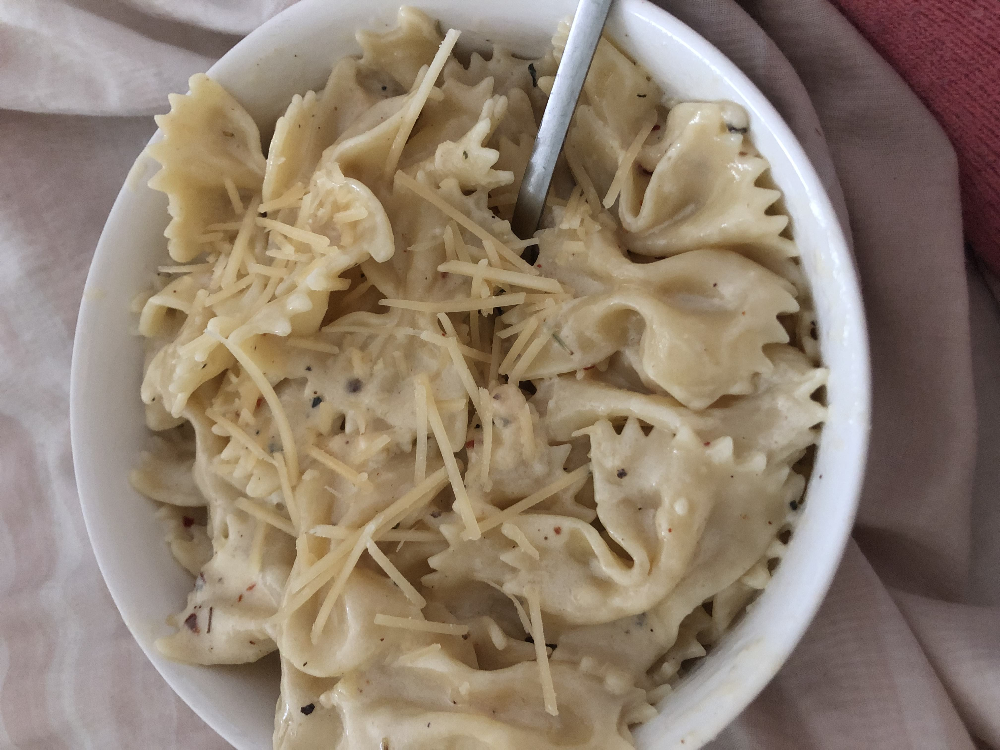
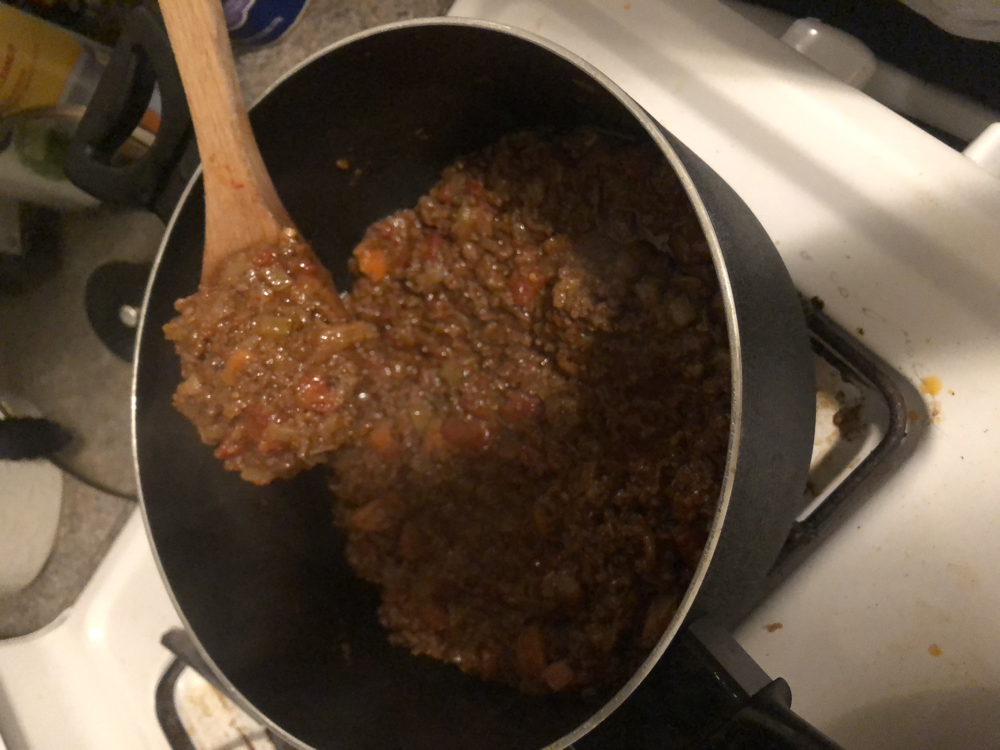
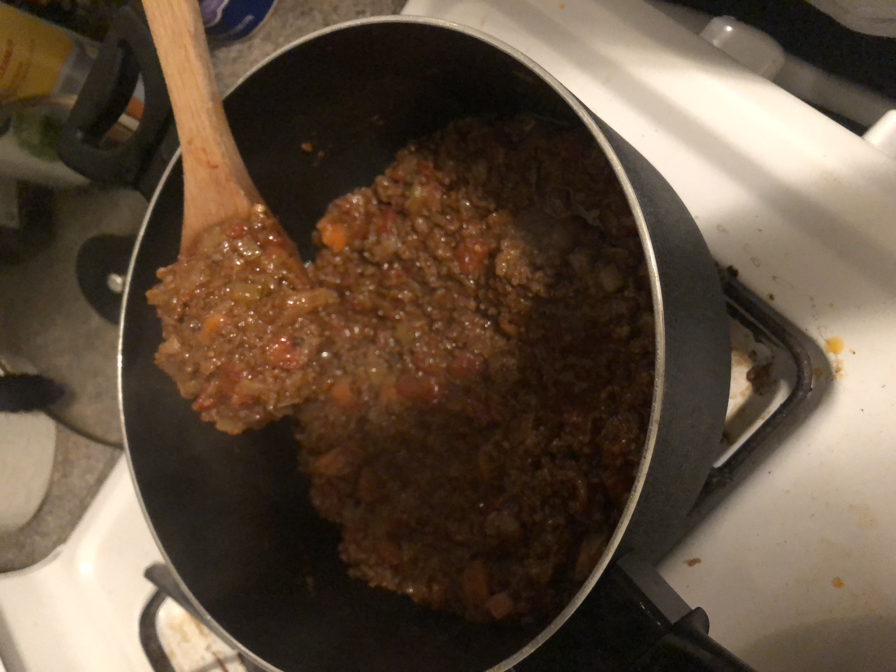
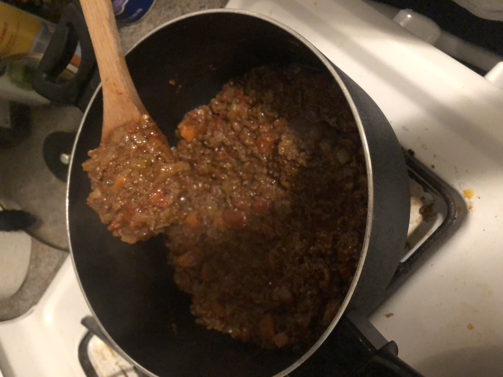

Welcome to Jake's College Kitchen!
Not everyone loves to cook. If you’re a busy college student and you’re not into culinary arts, it can become a struggle to eat consistent meals every day. I knew this struggle all too well but once quarantine hit and life slowed down, my boyfriend and I took the time to explore cooking. After trying a few recipes, we learned that we could save money eating at home. After all, cooking isn’t so hard so long as you’re patient and disciplined. Now, I’m sharing all of my favorite college meals with you. They’re all simple, quick, affordable and delicious!



 

